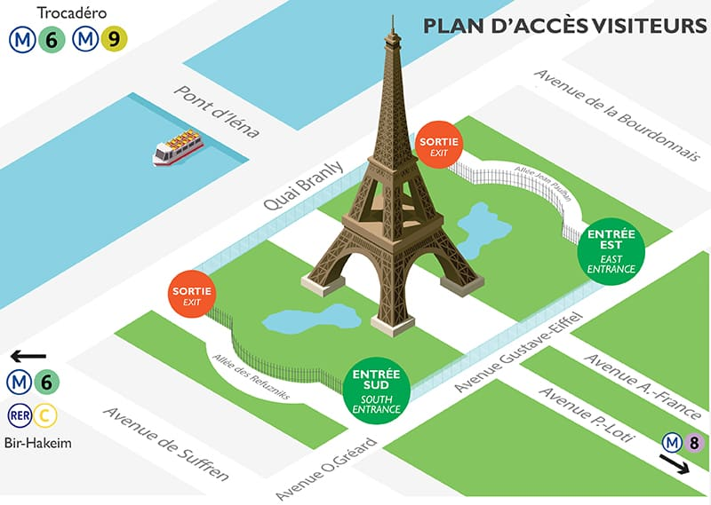

Localidade:
A França está situada na Europa Ocidental e é um dos países mais influentes do continente — tanto em termos históricos quanto culturais, políticos e econômicos. Sua posição estratégica faz dela um verdadeiro ponto de conexão entre o norte e o sul da Europa.
🗼Torre Eiffel: Fatos e Curiosidades
História e contsrução
- Inauguração: 1889, durante a Exposição Universal em Paris, para celebrar o centenário da Revolução Francesa
- Projetada por: O engenheiro Gustave Eiffel e sua equipe
- Material: Feita de ferro, com mais de 18.000 peças de ferro fundido e 2,5 milhões de rebites
Visitação
- Aproximadamente 7 milhões de visitantes por ano.
- A torre oferece vistas panorâmicas incríveis de Paris, incluindo marcos como o Arco do Triunfo, a Catedral de Notre-Dame, e o Museu do Louvre.
Iluminação Noturna
- A Torre Eiffel é iluminada por 20.000 lâmpadas todas as noites, criando um espetáculo visual famoso.
- Pisca-pisca: A torre tem um show de luzes que acontece a cada hora durante a noite, durando 5 minutos.
Curiosidades
- Durante a Primeira Guerra Mundial, a torre foi usada para interceptar sinais de rádio inimigos
- Em 1925, foi a primeira estrutura a ser equipada com um elevador moderno